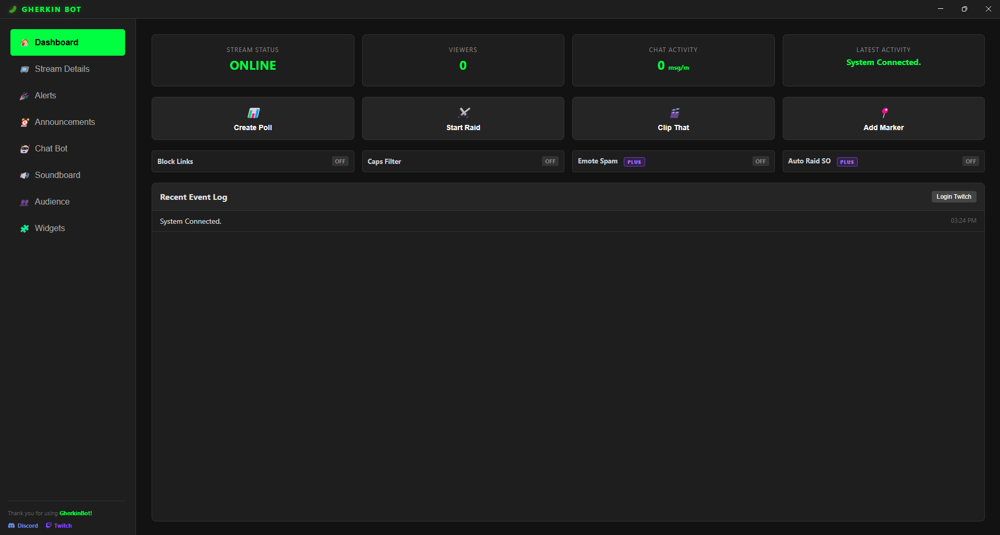
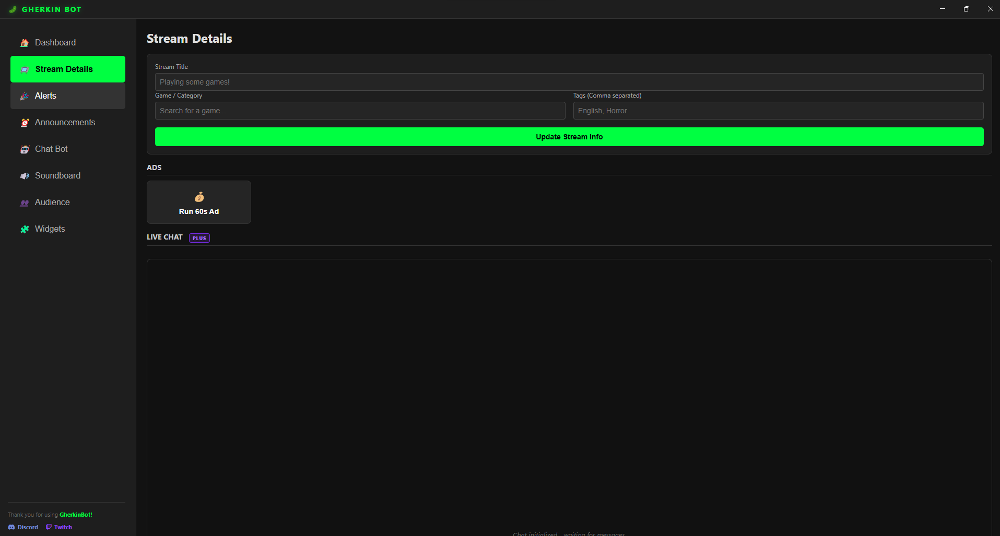
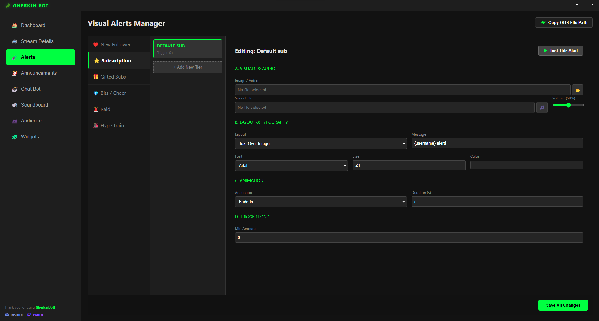
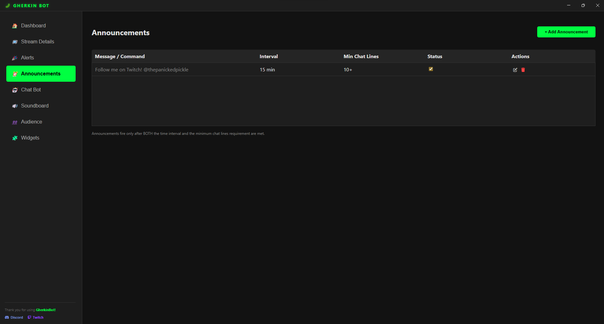
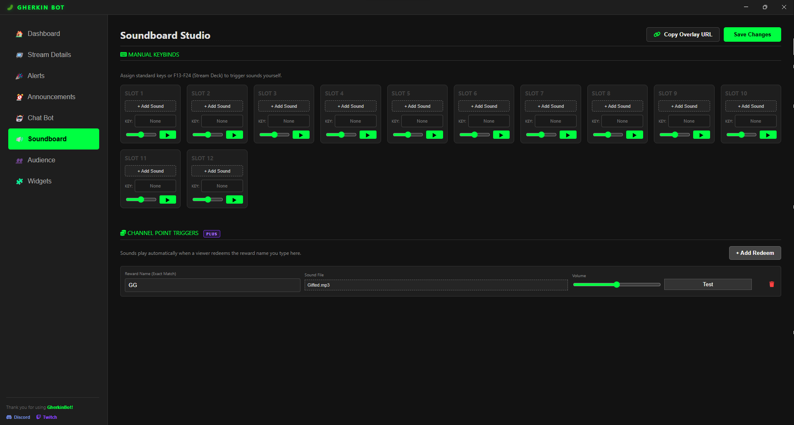
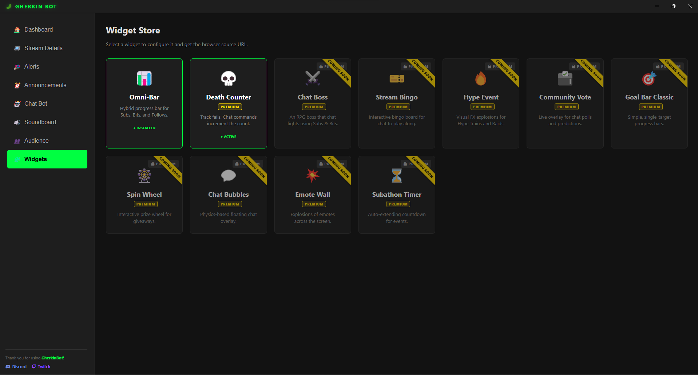

A deep dive into the current toolset. Real-time control for modern broadcasters.
Your central hub for mid-stream management. Monitor stream health and trigger actions instantly.
Real-time Viewers, Chat Activity (msg/min), and Stream Status.
Instant On/Off for Link Blocking, Caps Filter, and Emote Spam protection.
One-click buttons to Clip, Raid, Marker, or Start Polls.

Update your metadata without opening the Twitch dashboard.

Not just simple alerts. Build complex triggers based on support tiers.
New high-tech visual style for all alerts.
Set different alerts for different amounts (e.g., 100 Bits vs 1000 Bits).
Upload custom Images, Videos, and Sound files (.mp3, .wav, .ogg).

Powerful tools to keep your chat engaged and informed.
Features Hybrid Logic: Announcements only fire if both the time interval passes AND a minimum number of chat lines have occurred. No more spamming an empty room.
Create triggers (like !discord) or Counters (like !death) that increment a number automatically. Supports separate Global and User cooldowns.

Trigger audio clips directly to your output device. No extra software needed.

Browser-source overlays to gamify your stream. Copy the URL and add it to OBS.
*Green items are Live in v0.7. Grey items are in development.
